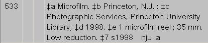
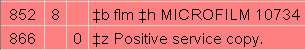
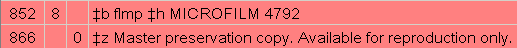

Contact
Princeton University Cataloging Documentation
Contact |
Princeton University Cataloging Documentation |
Microforms and photocopies
|
Multiple Versions: Different Generations of Microforms
When microforms of differing generations (with the exception of master preservation copies) and/or polarities are cataloged together:
(A microfilm reproduction service copy and master preservation copy made by Princeton)  Holdings Screen   |
| ©2008 Princeton University Last Modified 02/12/2008 |